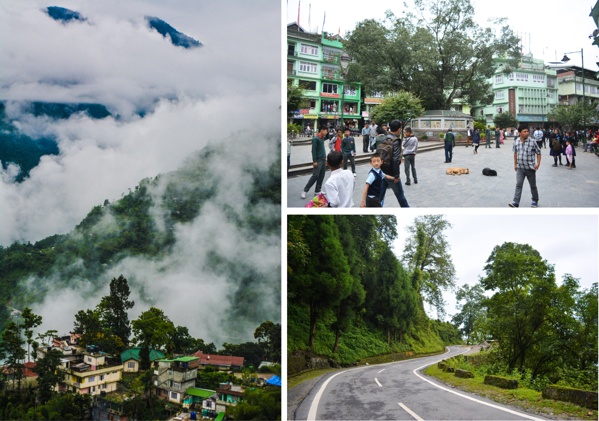
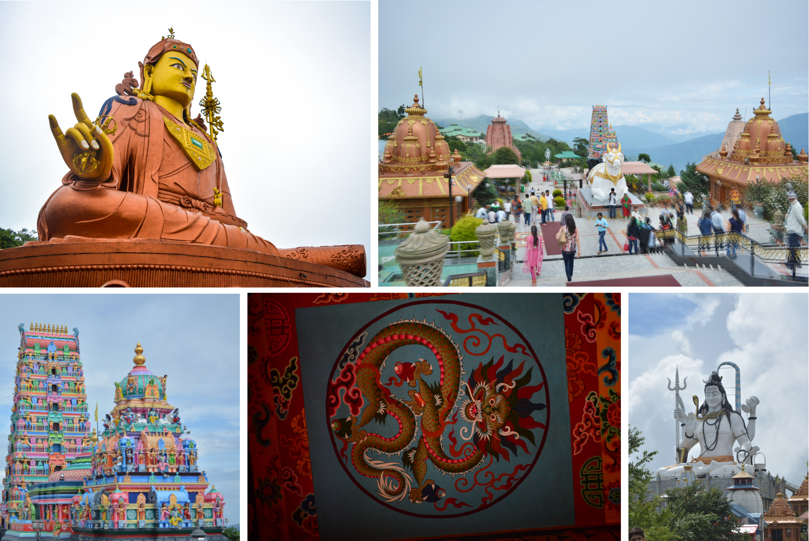
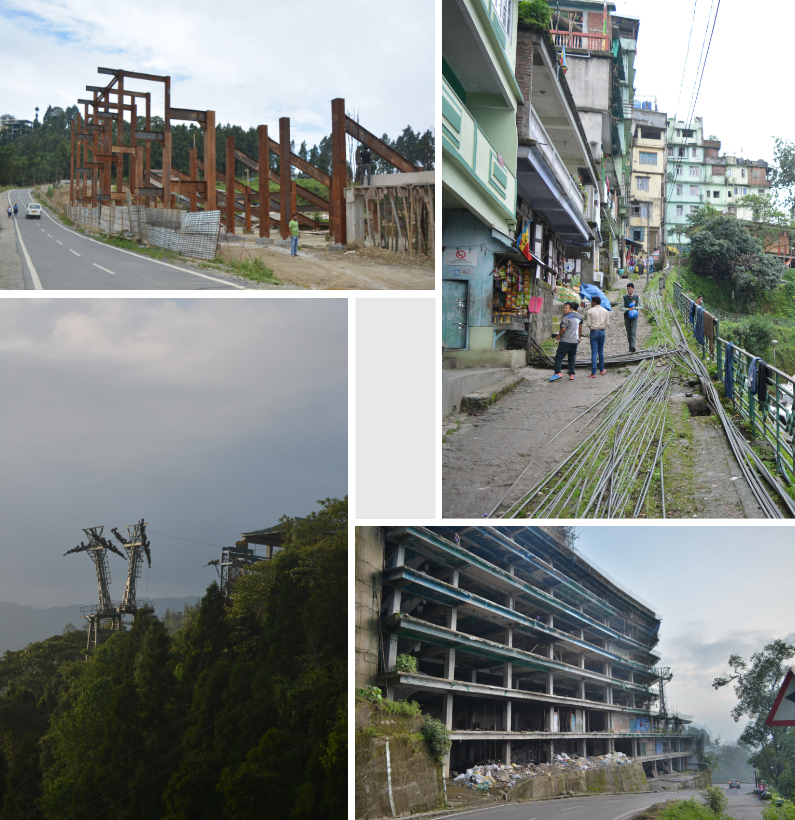
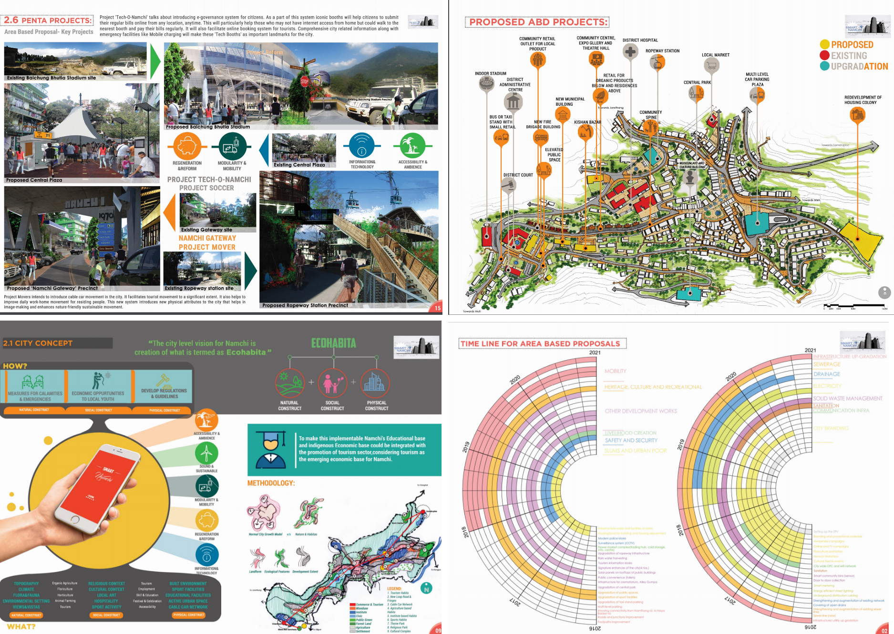
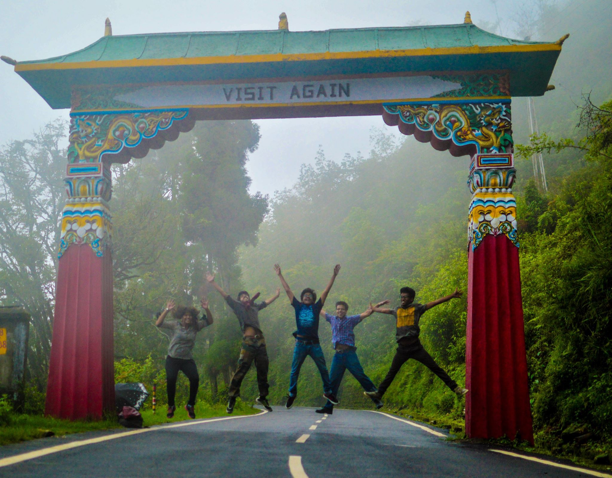

Smart City proposal: Namchi, Government of Sikkim
Internship experience of working on 'Smart cities proposal' at Urban Development and Housing Department, Namchi, Government of Sikkim
Duration: 9 Weeks Tools used:Human resourceInternship experience of working on 'Smart cities proposal' at Urban Development and Housing Department, Namchi, Government of Sikkim
Duration: 9 Weeks Tools used:Human resourceNamchi is a beautiful city located in the south of Sikkim with lush green mountains and clean cityscape. Resting on the Himalayas with clouds gushing through spaces and buliding everyday during the monsoon, makes it even more pleasant to experience. The city is culturally rich and diverse.
Glimpse of Namchi city
Home to both Buddhist and hindu tourist sites,Namchi a city has show tremendous growth in population . Although being the second biggest city of the state, its has comparatively less tourists coming to the city. It has somehow helped the locals to cherish the resources available and not over saturate itself with high influx of tourists.
Buddist and Hindu religious hotspots.
New developmental projects(Football stadium, ropeway, hotels) can be seen under development across the city.
Various under construction projects across the city
As part of the prestigious ‘Smart city challenge’ hosted by the ‘Union Ministry of Urban Development, Govt. of India’ .
The ministry used a competition-based method as a means for selecting cities for funding on an area-based development strategy. The proposed 100 smart cities were required to compete using ‘Smart City Proposal (SCP)’ . Cities competed at the state level with other cities within the state. Then the state-level winner competed at the national level Smart City Challenge. Cities obtaining the highest marks in a particular round were chosen to be part of the mission.
As part of the internship, our job was to revise the smart city proposal for competing in ‘Round-3’ of ’Smart city challenge’. The team consisted a mix of interns from Urban-planning and Architecture departments headed by Nodal Officer (Smart Cities Mission), Sikkim.
The proposed 100 smart cities were required to compete using ‘Smart City Proposal (SCP)’ inorder to get access to fastrack development funds
Few pages from the proposal
Link(from the official site) for the proposal, pg(16-33) has contributions of my work . Same proposal, compressed and loads faster here
Eventually, the proposal made it to the final selection for ‘Round-3’ of ‘Smart city challenge’.
We spent our entire summer(during the intership) exploring the vicinity and people around it. We also went to trails around parts, paths, and other tourist attractions(samdruptse) around. It was relatively less crowded and peaceful compared to other hill stations across the Himalayas. Following are few glimpses
Time was fun